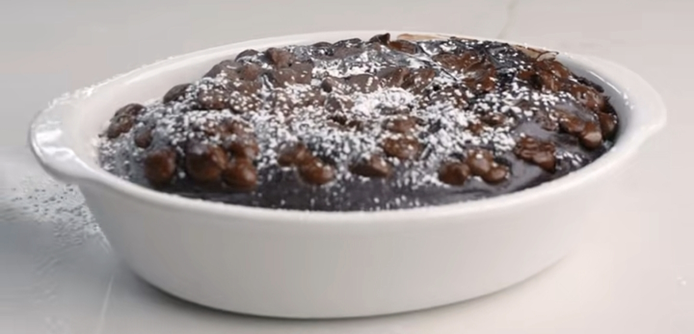

Protein Lava-Cake

Description
You love lava-cakes and just can't stop yearning for them? Instead of just buying
one from a local fast food restaurant - just make it yourself! This whole cake has
the same nutrients as the lava-cake you buy from third-parties, but the portion size
is much bigger.
Ingredients
- 60g chocolat whey
- 3 tbsp cocoa powder
- 2 tbsp sugar free chocolat pudding mix
- 1 tsp baking powder
- 1 tbsp granulated sweetener
- 2/3 cup almond milk
- 12g Chocolat chips
- Powdered sweetener
Process
- Mix the dry ingredients together
- Add the almond milk and chocolat chips into the mix
- Bake it in the oven (180°C) for 4-8 minutes
Home